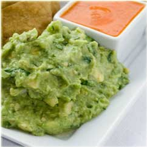

Appetizers
- Chorizo Chilaquiles
- Tortilla chips w/ our spicy tomato sauce & chorizo, topped w/ cheese & sour cream.
- Guacamole Chilango
- avocado w/ lime, onion, cilantro, & serrano chile.
- 
- Chilango Caesar Salad
- romaine lettuce tossed w/ our own Caesar dressing (add chicken if desired).
- Cocktail de Camaron
- shrimp w/ cilantro, red onion, & avocado in our cocktail sauce.
- Pozole
- traditional hominy stew w/ chicken, chile guajillo, & cabbage.
- Tostadas
- crispy tortillas topped w/ chicken, pinto beans, lettuce, cotija cheese, & sour cream (2).
- Sopa de Tortilla
- organic tortilla strips in chicken-tomato Mexican soup w/ avocado, cheese, & potatoes.
- Sopes
- side tortillas topped with your choice of picadillo, papa con chorizo, poblano rojos, or mushrooms (3).